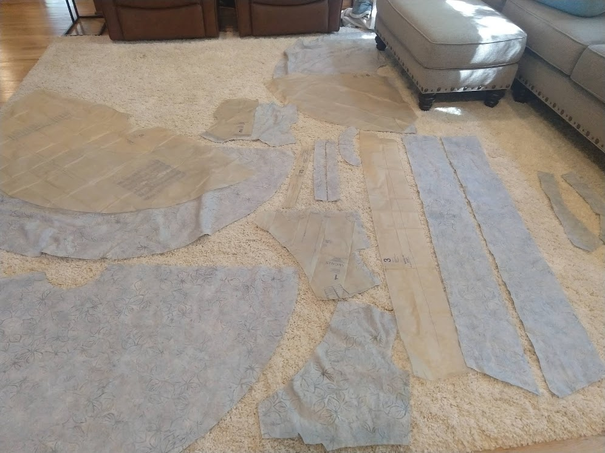
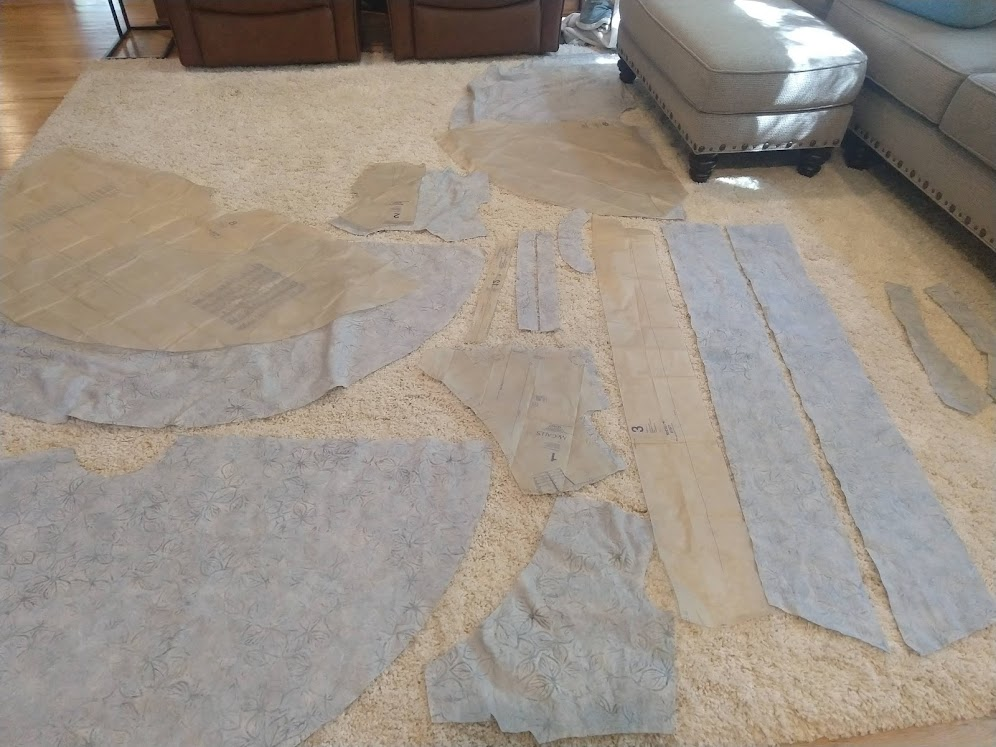

Other Hobbies
I enjoy 3D printing and modeling. Pictured first is a little bug I printed as a gift. Second is a trophy I designed and printed as a prize for the winner of the AEV Ping Pong Tournament.
Early 2020 I decided to try my hand at crocheting a shirt. Although a shirt was perhaps too ambitious, I loved the resulting pattern and colors!
Hiking and backpacking are in my top favorite ways of escaping the busyness of life for a while.
 

To make up for my less-than-ideal crochet shirt, I decided to sew a dress.
Rowing in the morning is a surreal, beautiful experience. Pictured is a competition I attended with the NC State Club Rowing Team.
Baking and cooking are two highly practical but also fun skills I picked up. I especially enjoyed bread making, leading to a new bucket list item to make every kind of bread. Pictured is a butterzopf in the traditional braid and a sourdough loaf I made with my own starter.
Sometimes I will pratice my drawing and coloring skills through making cards. Pictured is a flying fish I drew for a friend and a Christmas card for that same friend.
Becuase I have no time for an animal, I pour my attention into propagating my succulents. Pictured first is a planter of plants in various stages of propagation. The plants in the background are well on their way to adulthood, while the pups in the front are still very young. The second picture is a new plant I am preparing for propagation.